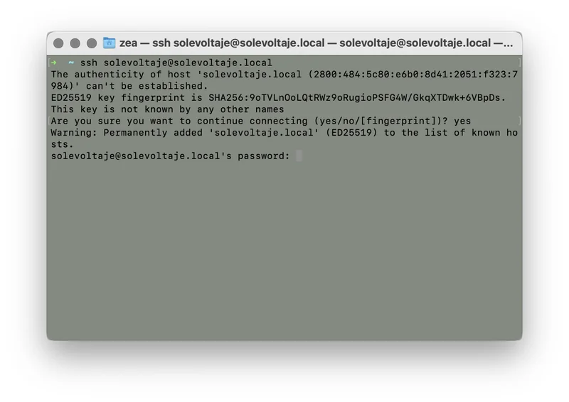
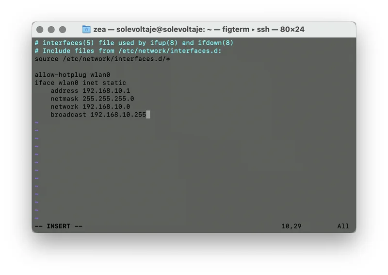
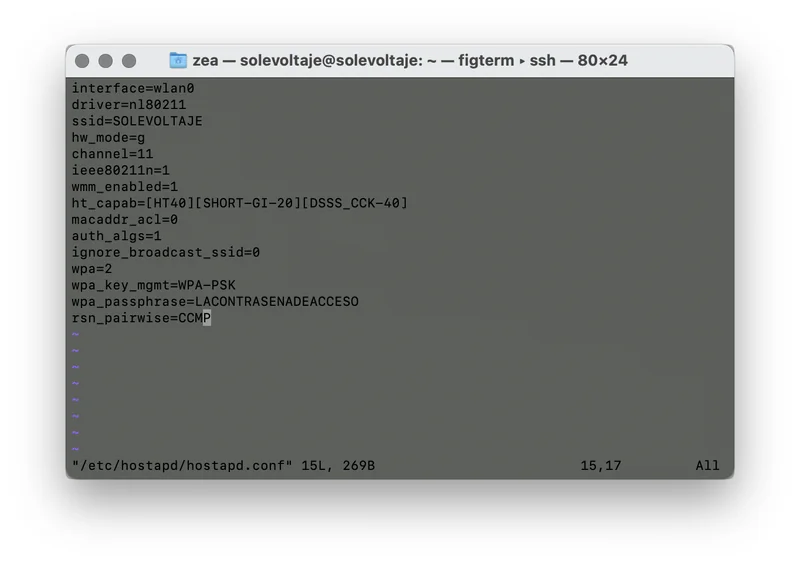
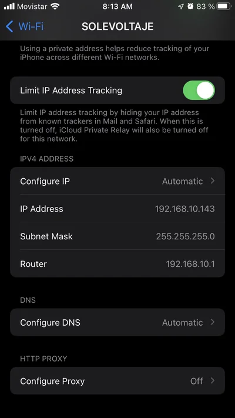
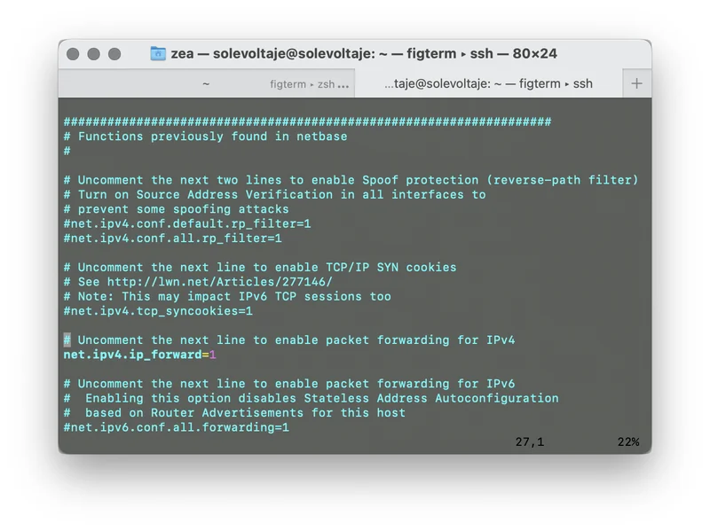
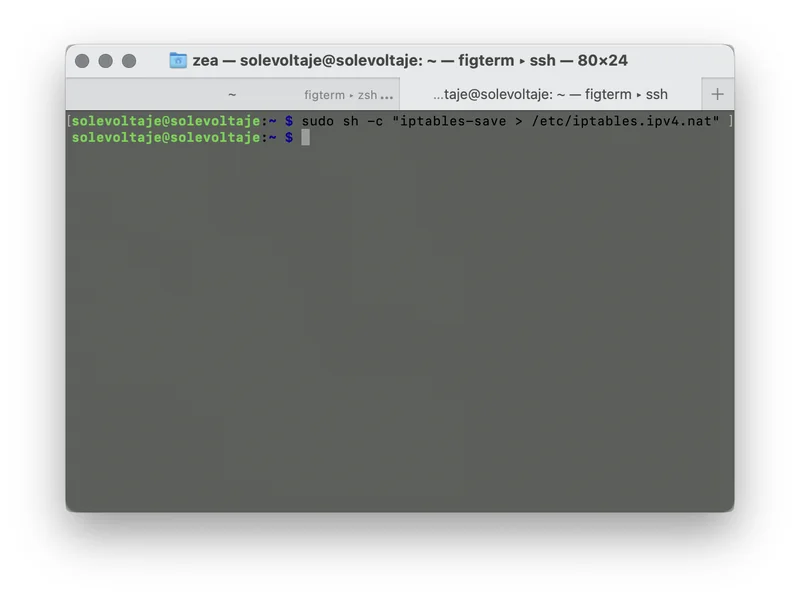

Set up your Raspberry Pi
Share your pocket internet
Hi, I’m Gabriel. I’m an artist. I find digital devices, how they work, and the way we humans interact with them fascinating. I consider myself a tinkerer, and I invite you, if you’d like, to be one too.
I wrote the solution Raspberry Pi: A little pocket internet so you could set it up, and now, I’m here to help you share your device’s signal with other people or other devices.
What does it mean to share your Raspberry Pi’s internet?
Having a computer the size of a credit card, being able to connect it to the Internet, and on top of that, being able to share that connection with the other computers you have for doing SOLE, is like opening the doors to the world’s largest library!
It’s turning any space into a Self-Organized Learning Environment where you can open the doors to the creativity needed to solve challenges—complex or simple—in your community. INCREDIBLE, right?
To do SOLE, there are only three fundamental things: people, a few computers with an internet connection, and Big Questions.
What is it for?
With this recipe, you will be able to turn your Raspberry Pi into a portable Router, so your community can connect wirelessly and access the information hosted there, and if you have a wired Internet connection, you can share that too.
What do you need?
- A Raspberry Pi
- A computer
- Internet connection - you can check the solution How to know what type of Internet signal you have? to make sure what kind of connection you have and if it’s active
- Lots of patience
How to do it?
- Moment 1: Connect to your Pi
- First things first, make sure you have a working Raspberry Pi. If you need help with this, check out the recipe Raspberry Pi: A little pocket internet where we tell you how to get started with this device.
- Once you have your system up and running, connect to your Raspberry Pi via a Terminal by starting an SSH connection.
- Make sure you have an Internet connection to continue with the following steps.
- Moment 2: Update your Raspberry Pi system

The first step is to perform a system-wide update to ensure we have the latest versions of the programs running on our Pi.
To do this, just type the following into the terminal:
sudo apt update && sudo apt upgrade
The system will let us know which packages need to be updated. To continue with the process, we must accept by typing y and pressing the enter key.
- Moment 3: Install the necessary software

Next, we need to install two programs on our Pi:
sudo apt install -y hostapd dnsmasq
This command will install hostapd, which is a utility that allows us to use our Pi’s wireless as a wireless access point, and dnsmasq, which will allow us to set up a server DNS and DHCP to allow users to connect to the server and get the necessary network settings to access it.
- Moment 4: Configure a static IP
- Disable the wireless interface

In this step, we will configure a static IP address on our Pi’s wireless interface. It is important that you are not connected wirelessly to the Pi, because during the following steps, wireless communication will be suspended. So, make sure you are connected via a cable, or have a screen and keyboard connected directly to the Pi to continue.
Network settings on the Pi are handled by the dhcpcd program; it is responsible for requesting and assigning the necessary IP addresses for the available network interfaces. Right now, we have to tell this program to ignore the wireless interface. To do this, we must edit the configuration file:
sudo nano /etc/dhcpcd.conf
… and at the end of it, add this line:
denyinterfaces wlan0
To exit and save the changes, press ctrl + x followed by y when prompted.
- Assign a static IP

Now we must assign a static IP address to the wlan0 interface in a different range than our wired network. Let’s edit the file:
sudo nano /etc/network/interfaces
Don’t be afraid. It looks complex, but if you’ve made it this far, you’re almost there. Add the following to the end:
allow-hotplug wlan0
iface wlan0 inet static
address 192.168.10.1
netmask 255.255.255.0
network 192.168.10.0
broadcast 192.168.10.255
What we are doing is configuring this interface to have the IP 192.168.10.1.
To exit and save the changes, press ctrl + x followed by y when prompted.
- Moment 5: Configure our wireless access point

It’s time to tell hostapd how to operate. We are going to tell it to broadcast the network name (SSID) and operate on a specific channel. We will put these settings in the file:
sudo nano /etc/hostapd/hostapd.conf
… where we add the following data:
interface=wlan0
driver=nl80211
ssid=SOLEVOLTAJE
hw_mode=g
channel=11
ieee80211n=1
wmm_enabled=1
ht_capab=[HT40][SHORT-GI-20][DSSS_CCK-40]
macaddr_acl=0
auth_algs=1
ignore_broadcast_ssid=0
wpa=2
wpa_key_mgmt=WPA-PSK
wpa_passphrase=LACONTRASENADEACCESO
rsn_pairwise=CCMP
You can change a few things here:
- The network name: we configure this on the
ssid=line; in our example, the network will be called SOLEVOLTAJE. - The channel:
channel=11is saying we are going to operate on channel 11, but we can change it to whichever works best in our location. - The access password: for security, it is necessary to assign a key to connect to the network. We do this by assigning it on the
wpa_passphrase=LACONTRASENADEACCESOline.
Now we must inform hostapd where the configuration is located. We do this by editing the file:
sudo nano /etc/default/hostapd
… and adding the following line to it:
DAEMON_CONF=
- Moment 6: Start the services
Before restarting our Pi, we must enable the services so they run every time we turn it on.
To do this, type the following into the terminal:
sudo systemctl unmask hostapd
sudo systemctl enable hostapd
sudo systemctl start hostapd
sudo systemctl unmask dnsmasq
sudo systemctl enable dnsmasq
sudo systemctl start dnsmasq
… and finally, we restart the Pi to do our first test:
sudo reboot now
- Moment 7: Do a first test

From another computer or phone, search the wireless networks for the one we just created, in our case SOLEVOLTAJE, and connect to it.
If you check the network settings, you should see that the assigned IP address is in the range we selected in the dnsmasq configuration. In our case, the device has been assigned the IP 192.168.10.143.

- Moment 8: You can now share the wired connection

At this point, those who connect to our access point will be able to see the files and services we have configured on our Raspberry Pi. If you want to share the wired Internet connection via the wireless network, continue with the following steps.
- Moment 9: Forward traffic to the wired connection

It is necessary for our system to forward traffic from the wireless interface to the wired one in order to share the connection. At this point, we have to edit the file:
sudo nano /etc/sysctl.conf
In its content, we look for the line that says #net.ipv4.ip_forward=1 and remove the # at the beginning to indicate that we want to activate this directive. Once we make this change, we save the file and continue to the next step.
- Moment 10: Finally, secure the Firewall

/etc/iptables.ipv4.nat""."/>We are now at the last step of the configuration. Here we have to tell the Firewall to allow network traffic to pass between the wireless and wired interfaces. To do this, enter these commands into our terminal:
sudo iptables -t nat -A POSTROUTING -o eth0 -j MASQUERADE
sudo iptables -A FORWARD -i eth0 -o wlan0 -m state --state RELATED,ESTABLISHED -j ACCEPT
sudo iptables -A FORWARD -i wlan0 -o eth0 -j ACCEPT
At this point, we should already have internet on our wireless clients! However, we need to make sure these changes aren’t lost when we restart our Pi. To do this, we are going to save the configuration in a text file:
sudo sh -c "iptables-save > /etc/iptables.ipv4.nat"
- Moment 11: Now, with Internet!

After this long process, the clients connected to our Pi will be able to access the Internet connection shared from our Raspberry Pi… SUCCESS!
Did you get tangled up in any of the steps? Tell us how to complete this solution to make it clearer.
Other possible internets
With this recipe, you can set up a portable Router, which is useful for carrying content on your Raspberry Pi and sharing it with the community without needing a constant Internet connection.
Additionally, if you have a wired connection, you can share it to make your SOLE sessions more powerful.
Why might this solution work?
Having a portable, low-power router allows us to easily take our content to multiple places where the Internet connection is not constant.
However, the number of clients our Pi can support is low. If you are going to connect more than 10 people at the same time, the connection speed might get a bit slow, and to solve that, you should look for a more powerful router.
If you made it this far, you’ve learned a ton of things that you can share with your community and, in doing so, improve connectivity conditions. Using the Internet as a group is a challenging experience, both in terms of technology and in terms of community. Doing SOLE is a way to use the Internet as a group to live better together.
Related solutions
- How to install a web server on a pocket computer?
- How to know what type of WiFi signal you have?
- How to have access to an encyclopedia without having internet?
- power bank solution
Remember that at Voltaje ⚡⚡ you can find many more solutions to connect without fear to using the internet as a group. Go ahead and keep browsing! See more solutions